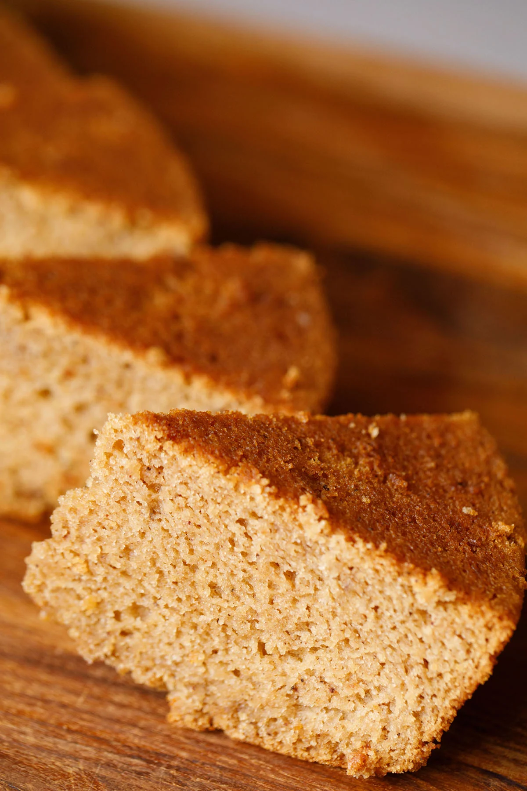

Apple Cake

Description
An apple cake is a moist and flavorful dessert that features fresh apples baked into a rich batter. Often spiced with cinnamon, nutmeg, or allspice, the cake's texture can range from dense and tender to light and fluffy. It's a classic comfort food, especially popular in the fall, and is frequently topped with a sweet glaze, a crunchy streusel, or a simple dusting of powdered sugar.
This versatile dessert is often served warm, making it a perfect match for a scoop of vanilla ice cream or a dollop of whipped cream. The combination of tender cake, soft apple pieces, and warm spices creates a cozy and delicious treat that's perfect for any occasion.
Ingredients
- pie crust
- apples
- granulated sugar
- brown sugar
- flour
- cinnamon
- nutmeg
- lemon
- egg
Steps
- Start by preparing this flaky pie crust recipe which makes 2 (9") pie crusts, one for the bottom and one for the top of the pie. The pie dough will need to chill for at least 1 hour before rolling out. Or use a store-bought pie crust and follow package directions.
- Place oven rack in the center position and Preheat the oven to 400°F (204°C).
- In a large bowl, combine the sliced apples, granulated sugar, light brown sugar, flour, cinnamon, nutmeg, and lemon juice and lemon zest; toss to coat evenly.
- Remove the pie crust dough from the fridge and let rest at room temperature for 5-10 minutes. On a lightly floured surface, roll one disc into a 12" circle that is ⅛" thick. Carefully lay the crust into the bottom of a deep dish pie plate.
- Spoon the apple filling over the bottom crust and discard juices at the bottom of the bowl. Roll out the second disc of pie crust until it is ⅛" thick and lay it over the apple filling.
- Use a sharp knife to trim the dough along the outside edge of the pie plate. Lift the edges where the two pie crust meet, gently press to seal and fold them under. Rotate the pie plate and repeat this process until edges are neatly tucked under themselves. Cut 4 slits in the top of the dough to allow steam to vent. Place the pie on a baking sheet.
- Brush the surface of the pie crust with the egg wash and sprinkle with sanding sugar. Cover the edges with a pie shield or a strip of foil to keep them from over browning during the first 25 minutes.
- Bake at 400°F (204°C) for 25 minutes. Carefully remove the pie shield, turn the oven down to 375° and continue to bake for an additional 30-35 minutes or until the top is golden brown and the juices are bubbly. Cool at room temperature for at least 3 hours.
Home